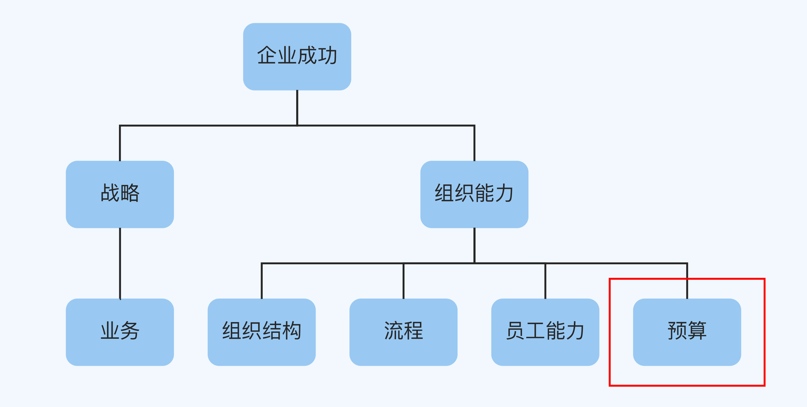
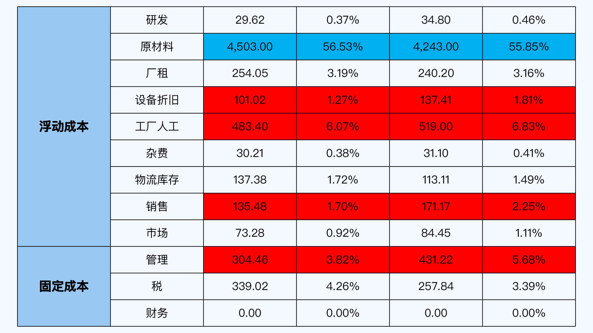
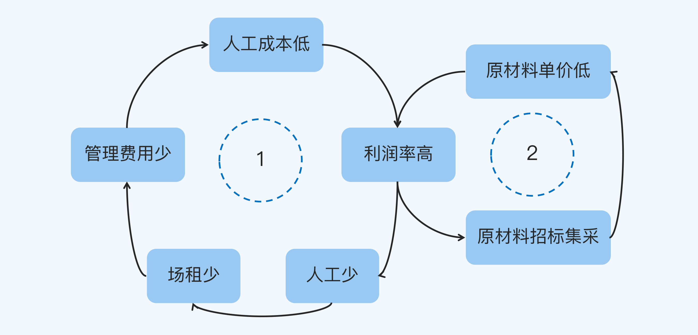

- 00 开篇词 为什么每个人都应该学会复盘？.md.html
- 01 CLAP模型：一个优秀的复盘模型是什么样的？.md.html
- 02 OPTM框架：怎么使用CLAP模型？.md.html
- 03 教练技术：怎么做复盘才能化解冲突？.md.html
- 04 制度和文化：怎么营造复盘环境？.md.html
- 05 三角法：怎么组建复盘团队？.md.html
- 06 MECE原则：怎么准备复盘资料？.md.html
- 07 五步法：如何召开一次高效的复盘会议？.md.html
- 08 事实比较：如何快速比较目标与结果？.md.html
- 09 分析原因：梳理逻辑时怎样找到切入点？.md.html
- 10 洞察规律：怎样更新认知才能找准发力点？.md.html
- 11 OKR：怎样根据复盘结论制定计划？.md.html
- 12 Double Check：怎么检查评估一次复盘的效果？.md.html
- 13 案例导学：我是怎么帮助企业做复盘的？.md.html
- 14 战略升级：5年增长100倍的跨境电商做对了什么？.md.html
- 15 业务关键点：改进一个点业绩增长50%？.md.html
- 16 组织结构设计：变动一个职位，就能带来100万_月的增量吗？.md.html
- 17 高效赋能：怎么建立流程才能把人效提升3倍？.md.html
- 18 人才培养：怎么把人才转化成实际生产力？.md.html
- 19 预算制定：人头和财务预算到底怎么定？.md.html
- 春节荐书（一）《原则》：在不确定中找到确定.md.html
- 春节荐书（二）《人类简史》：故事的力量.md.html
- 结束语 复盘，见天地见众生见自己.md.html
- 捐赠
19 预算制定：人头和财务预算到底怎么定？
你好，我是张鹏！
在上一讲中，我分享了提升人效的案例。在现代企业中，人既是收益，也是成本。人头和财务一样，都需要制定预算。
在大多数公司，部门或者项目负责人对预算的理解，可能还停留“多多益善”的程度——预算做得多一点，更加能够确保把事情做好。

但其实制定预算有两个目的，对于确定性的业务来说，主要是节约成本；对于不确定性的业务来说，主要是控制风险。
就我的观察，很多公司的人头和财务预算都有优化的空间。这一讲，我就来聊聊这两种不同导向的预算问题。
节约成本
对于节约成本来说，重要的是“把钱花在刀刃上”，所以我们首先得知道哪里是“刀刃”（关键点）。
案例背景：利润率比对手低
在第15讲中，我提到了生产木工机械传送设备的F公司，现在我还是以这家公司为例。
他们在做财务盘点的时候发现，他们的利润率比同业竞争对手低不少，在组织结构、流程和人工都差不多的情况下出现这种现象，原因可能有两个：
- 生产效率低，导致营收少、均摊固定成本高。
- 成本结构本身出了问题。
为了找准原因对症下药，我帮他们组织了一次复盘。
复盘详解
对比
一开始，F公司把成本划分为浮动成本和固定成本，比如用于制造的原材料属于浮动成本（与生产价值链直接相关的成本），而管理人员的工资属于固定成本。
根据F公司的实际情况，我按照MECE原则对成本做了进一步的细分：
- 浮动成本：直接产生价值的成本部分，包括研发、原材料、场租、水电耗材、设备折旧、工厂人工、物流、销售和市场等费用。
- 固定成本：包括管理、税务和财务等费用。
然后，我做出一张成本结构表交给F公司的老板，让F公司的财务把近2年的数据填进去，计算每一项的比例，并且把有明显差异的地方（尤其是成本比例上升的地方）标记出来，红色代表做得不好的地方，蓝色代表做得好的地方，如下所示：

（注：表格数据仅用于本课程教学，并非真实数据。）
有了这张表格，我们就能清楚地看出做得好的地方和做得不好的地方具体的区别在哪里。
逻辑
我们重点关注红色的部分，也就是做得不好的地方：设备折旧、人工、销售和管理部分的成本上升比较多。
对过程追溯之后，我们了解到：
- 设备折旧主要是因为过去一年有设备低价处理售出，这种事情属于偶然性事件。
- 工厂人工比例增加是因为为了应急高峰期的用工需求做了很多长期人员备份，但是并没有采用短期合同工导致。
- 销售费用比例的增加主要是因为大幅提升了销售提成导致。
- 管理费用的增加是因为新增了ERP系统导致。
然后，我们进一步分析发现：
- 设备折旧的提升虽然属于偶然性因素，但是以后在采购设备的时候，需要根据业务长期发展需要把好审核关，不会根据突发性的需求贸然地采购。
- 人工需求要更灵活，如果是短期的需求量增加，可以采用短期工策略。
- 销售提成的增加并不一定会带来销售额的增长，需要仔细研究市场环境定出销售策略，提成只是销售策略的其中一环。
- 管理上ERP的引入，从长期来看反而属于一次性投入，从更长的周期会降低整体的生产成本。
认知
制定来年的预算时，一般会参考往年数据以及当下对业务趋势的判断。
在以上所有的分析过程中，我们发现：
- 除了设备折旧和ERP引入等一次性分摊费用外，其他都和人工（工厂人工和销售）有关，所以人工是最大的成本节约关键点。
- 结合未来一年的原材料供应商的竞争环境以及供应量，原材料成本这一项甚至还有进一步下降的趋势（上图中蓝色部分）。
结合这两个关键点切入进行进一步做假设推导，我们发现：
一方面，如果工人减少，那么工厂面积也可以减少（多的车间可以租给其他的公司），管理人员同样可以减少，最终导致公司整体的人工成本降低（如下图增强循环1）。
另一方面，如果想要降低原材料单价，集中招标采购的效果远远高于与供应商单次询价砍价的效果（如下图增强循环2）

规划
根据以上的分析，F公司的老板最终决定从工人数量和原材料集采出发，制定新一年的预算。
- 根据以往的用工的淡旺季，确定最少工人数量，这些Head Count采用长期合同制进入招聘计划；同时估算用工旺季需要的大致用工人数，提前布局，这些head count采用短期合同进入招聘计划，这个部分大概优化了2%的成本。
- 算出旺季最多需要的厂房量，平时用作仓库，多余的部分厂房租给其他公司，这个部分大概优化0.5%的成本。
- 重新优化管理结构配备管理人员，加上接下来没有新的信息系统采购计划，这个部分在接下来的一年中预估节约2.5%的成本。
- 统计各类别原材料（包含元器件）全年的需求数量，对以往合作的供应商进行信用分级，以全年的需求为标的，邀请信用好的供应商过来投标，通过集采让供应商报价的模式降低全年的原材料单位成本，这个部分预估节约了2%的成本。
最终结果：净利润提升
在成本预算上仅仅改变了这两项工作，其他照常，最终导致了接下来这一年的净利率从16%提升到23%，同比增长近50%。
对销售额以亿元计算的制造业来说，7%的利润率提升，意味着每1亿元会增加700万的净利润，这是非常可观的。
风险控制
接下来，我再分享一个关于控制风险的案例。
我在做咨询的过程中发现一个很有趣的现象，有预收款业务的公司（比如需要你提前充值的健身房、美容院和教培机构等），按理说现金流应该很好，但是它们却更容易死于现金流断裂。
原因在于这些公司提前拿到钱之后，最喜欢干的一件事就是继续扩大规模建新店。正因为手里钱多，所以建新店的时候，并没有极度认真地考虑风险，比如选址、团队能力、服务专业化和当地竞争等非常现实严峻的问题。
规模大意味着成本高，但并不见得效率就高（一般来说，快速开店反而低）。结果一旦有突发性的危机（比如新冠疫情）到来，这些公司就会死得比那些现金流看上去没那么宽裕的公司更快。
究其本质，就是因为大多数老板或者公司高管没有搞清楚“债”（预收款）、“收入”（已经完成服务的款项）和“利润”（收入-当年的运营成本-折旧-税）之间的关系。
现金流充裕是个好事情，一直趴在账面上不动的确是不对的，因为相当于资产收益率ROA很低；但是过渡使用也不对，一旦经营不好或者面临突发情况，企业就会陷入非常危险的境地。
那么，手头上到底该保持多少现金会比较好呢？
案例：现金流管理
在第16讲中，我介绍了少儿英语线下培训机构A公司的故事，这一次我还是以它为例。
A公司2018年开店规模增加了一倍，2019年初手上还是握着大笔的现金流，准备继续开店，但是当时开的新店就已经呈现经营利润率低的问题了。
这时候，A公司到底还应不应该拿着手头上的现金继续开店呢？
最保守的方案是，保留能够维持把全部缴费学员服务结束的现金流，大约12个月，这几乎相当于当时收到的全部预收款了。
最极限的方案是，保留公司能够撑到下一次规模收费的时间段维持公司正常运营所需要的现金流，比如正常时段是1个月，如果在12月份，就需要至少3个月的现金流（1～2月报名学习的人很少）。
折中的方案在两者之间。
在测算风险的时候，极限情况是必须要考虑的，按我以往的经验，极限情况的2倍是一个通常的做法。所以我们商讨出来方案是，保留6个月的运营费用（3个月的2倍）。除此之外的现金，就可以用于拓店、营销、培训、投资等方面了。
这个现金流风险控制方案在2020年的新冠疫情期间让A公司在教培行业政策性长期停课的情况，依然抵抗住了风险，并且在疫情期间没有裁员，增加了内部凝聚力。
小结
这一讲分享了预算制定中两个关键问题，“成本节约”和“风险控制”。现在，我们回顾一下重点内容：
- 在节约成本时候，找到关键成本项非常的重要，可以使用“成本结构表”来列出每一项的数据。
- 通过与自身历史数据的纵向对比（如果可能，和同行的横向对比会更好），可以找出可调节的关键成本项。
- 根据因果循环图，找出这些成本项之间的关系，决定调整优先级，进而制定调整计划，测算成本节约。
- 在控制风险的时候，最核心的问题是根据业务属性找出最极限现金流要求，以及保守现金流要求。健康现金流在二者之间，行业通常的做法是极限现金流的2倍，当然，你可以根据实际情况进行调整。
思考题
这就是这一讲的全部内容了，最后留一道思考题给你：
请你判断一下自己负责的业务是确定性的还是不确定性的，如果是确定性的，还有哪些关键项是可能节约成本的？如果是不确定性的，那么怎么控制风险呢？
欢迎你把答案写在留言区，和我一起讨论。
© 2019 - 2023 Liangliang Lee. Powered by gin and hexo-theme-book.